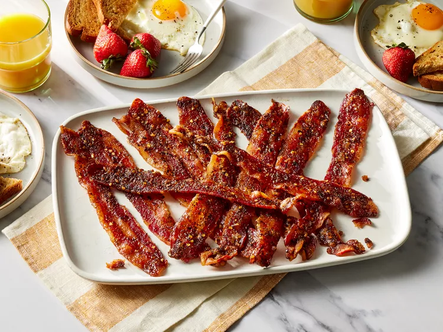
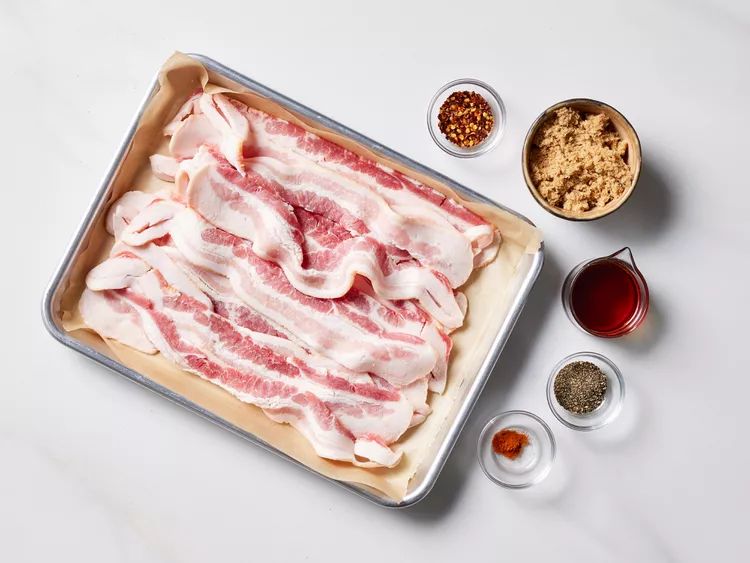
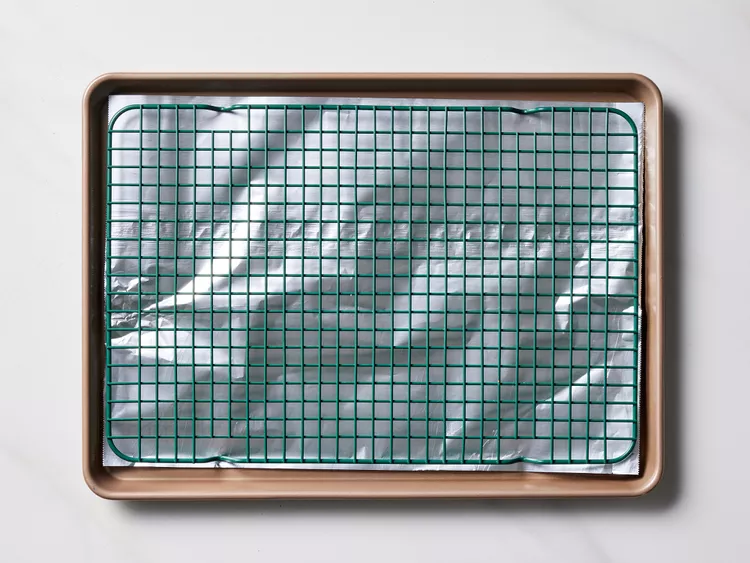
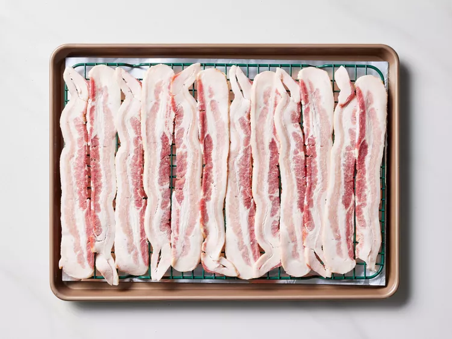
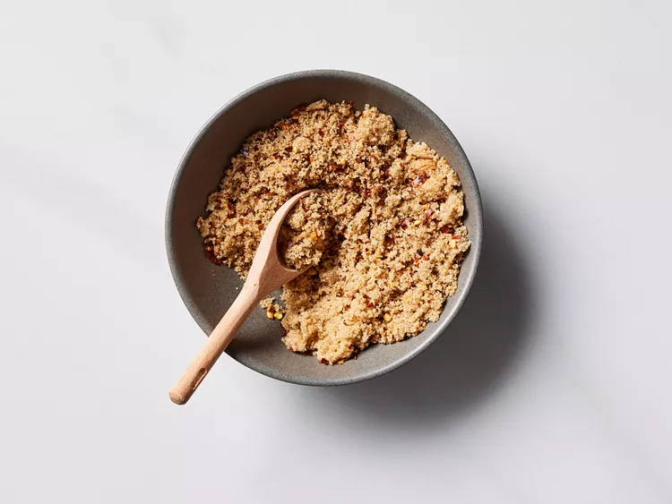
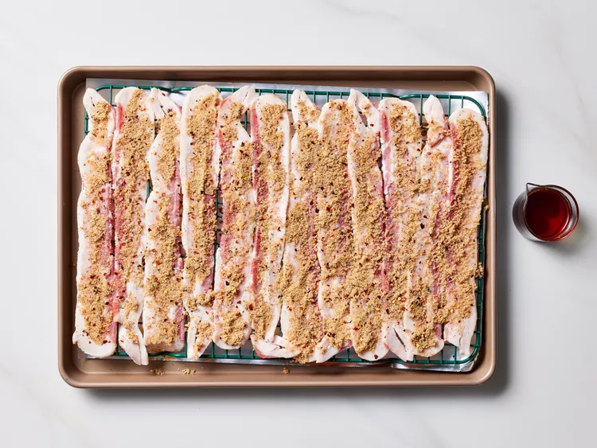
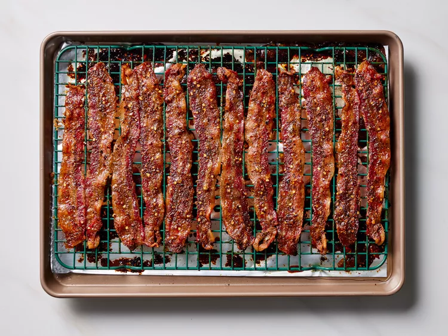

Million Dollar Bacon
This million dollar bacon is sweet and spicy, caramelized on top, and
chewy with crisp edges. Very tasty!

Ingredients
- 1 pound thick-cut bacon
- 1/3 cup packed brown sugar
- 1 teaspoon crushed red pepper
- 1 teaspoon freshly ground black pepper
- 1/8 teaspoon cayenne pepper (optional)
- 1/4 cup pure maple syrup
Directions
- Gather all ingredients.

-
Place oven rack in center of oven and preheat to 350 degrees F (175
degrees Celsius).
-
Line a large rimmed baking pan with foil. Place a wire rack on to of
foil.

- Lay bacon in a single layer on wire rack.

-
In a small bowl combine brown sugar, crushed red pepper, black pepper,
and cayenne pepper, if desired.

- Rub bacon with brown sugar mixture.

-
Drizzle with maple syrup. Bake until caramelized and at desired
doneness, 40 to 50 minutes.

Zurück zur Übersicht